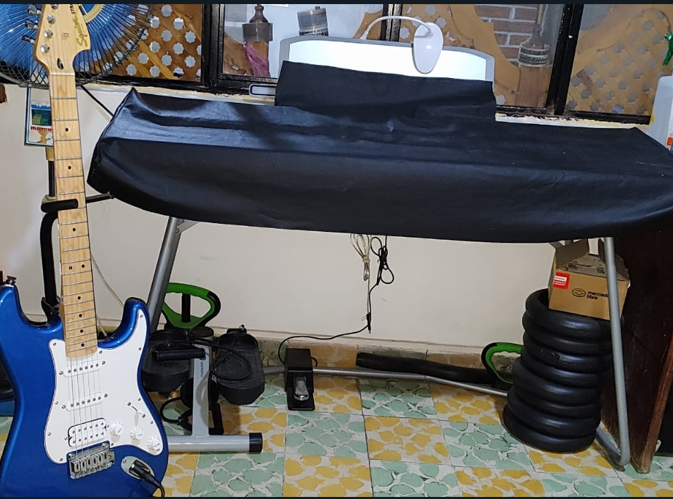
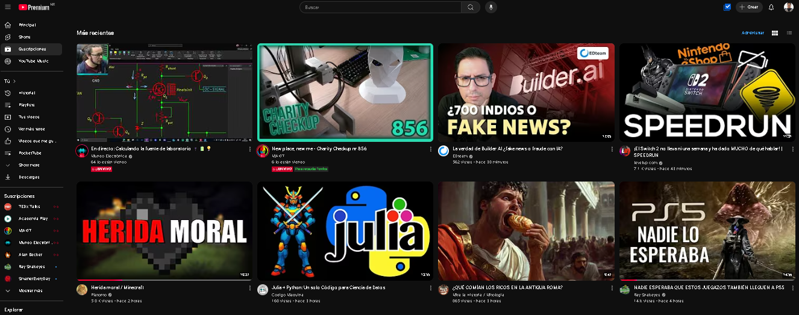
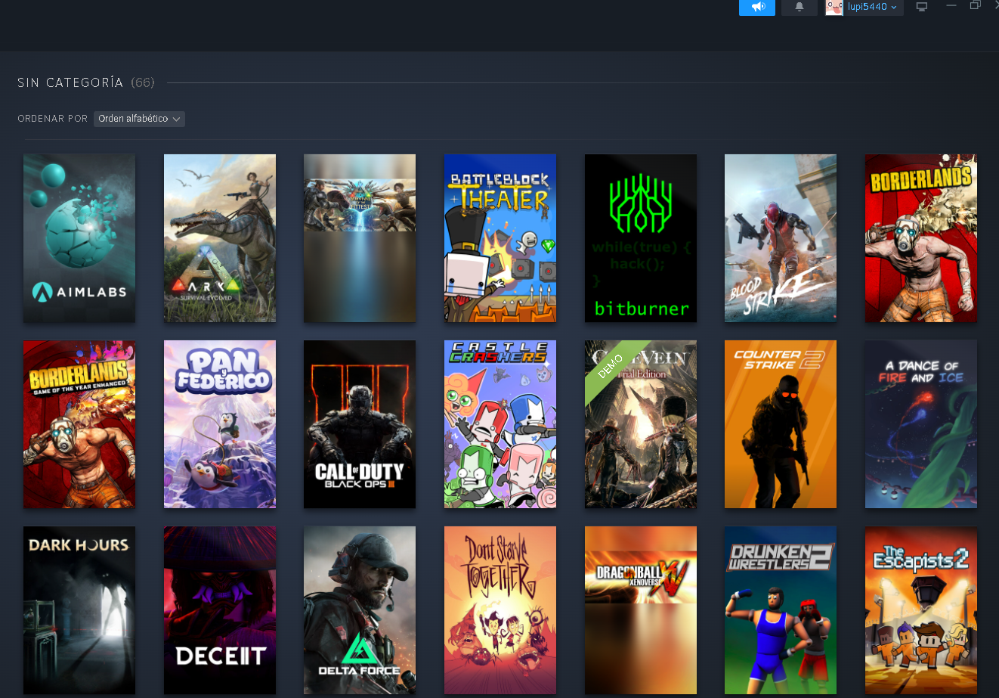

Correo electrónico: ghost_fire_heart@hotmail.com
Redes sociales:
Me gusta tocar música instrumental y el rock aunque no soy bueno hago el intento por aprender.
Disfruto de que cualquier cosa que vea la inverstigue y pueda entender con presicion el porque de su funcionamiento , la mayoria de las veces las ideas provienen de mi feed de youtube.
Me gusta jugar , principalmente me llaman los juegos AAA o los de ritmo y puzzles.
La mayoria de la criptografia se basa en la dificultad de descomponer numeros muy grandes en sus factores primos sin embargo en la computacion cuantica teoricamente se puede resolver este problema haciendo vulnerables los metodos de cifrado , por lo que es solo cuestion de tiempo en avance tecnologico para que toda la seguridad quede vulnerable.
Casualmente existe los denominados generadores congrencial lineal los cuales comparten la misma formula para un solo termino en el cifrado afin.
Mucho del software actual para verificar licencias ocupan cifrado asimetricas, para comprobar que es valida la licencia sin embargo no muchos del software ocupa llaves asimetricas a veces ocupan cifrado simetrico lo que hace vulnerable a que usemos ingenieria inversa y tener los generadores de licencias.